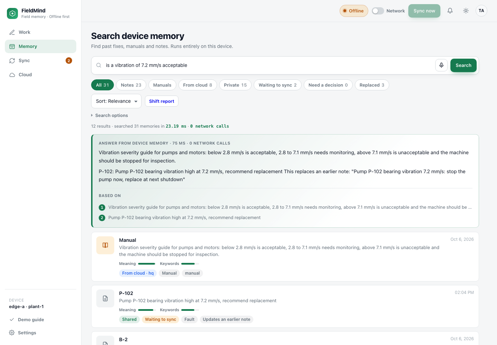
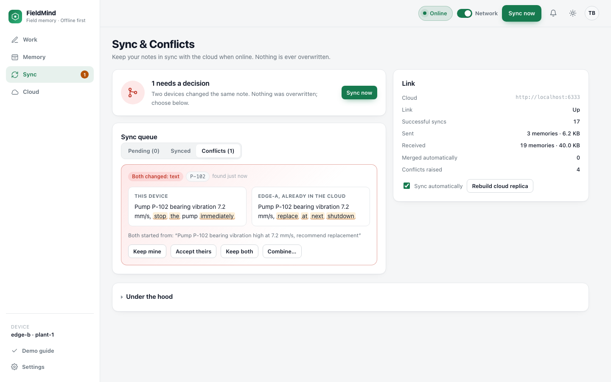

Memory for field technicians that works with no network, knows what it is allowed to share, and syncs with the fleet whenever a link exists.
Plant floors, basements and remote sites drop the connection for hours. The work does not stop.
One note can hold a fault the whole fleet needs and a colleague's name that must never leave the device.
Devices that work apart come back with different versions of the truth, and someone's edit gets lost.
FieldMind is one process on the device: Qdrant Edge for memory, small ONNX models for meaning, names, reranking and photos, SQLite for what is waiting, and a dashboard a technician can use with gloves on.
Write, dictate or photograph what you saw. The device shows what it will share before you save, and learns from your overrides.
Hybrid search over your notes, your photos and headquarters manuals in about a millisecond. A cross-encoder rereads the best candidates.
A cited answer written on the device. Every number, asset and verdict is checked against the note it cites. No cloud call.

Shared notes
Masked notes
Headquarters manuals
Photo thumbnails
Other devices sync here too, and with each other over the local network when it is unreachable.
| What the technician wrote | What happens |
|---|---|
| Pump P-102 bearing vibration high at 7.2 mm/s | Shared |
| Smell of gas near compressor K-4 | Shared Urgent, sent first |
| Suresh and Priya replaced the coupling, call 9876543210 | Shared, names and number masked |
| Technician Ravi Kumar reported chest pain | Private, stays on the device |
| SCADA panel login password is … | Private, cannot be overridden |
| Operator slipped on oil near P-102, no injury | Shared Flagged: reads as two kinds |
About 20 ms on the device: a name recognition model, pattern detectors for credentials, contacts, identity numbers, vehicles, badges and addresses, and a semantic classifier. Vectors for a masked note are computed from the masked text. Override a decision and notes like it follow your choice from then on.
An upload lands only if the cloud is still at the revision the device last saw, confirmed by a per-write id. An edit made mid-upload is rebased, not lost.
Changes to different fields combine automatically, field by field.
Keep mine, accept theirs, keep both or combine. Even while offline. One click stages a conflict for the demo.

| Qdrant feature | How FieldMind uses it |
|---|---|
| Edge shards, in process | Three per device: local notes, a cloud replica, and photos with a CLIP vector each |
| Built-in BM25 with IDF | Keyword half of hybrid search, with no server |
| Dense vectors and filters | Meaning search narrowed by asset, scope and status; photos found by what they show |
| Shard snapshots | A device far behind restores its replica from one file |
| Conditional upsert and payload overwrite | Compare and swap, so devices never clobber each other; payload-only patches skip the vectors |
| One schema on both sides | The same dense and sparse vectors on edge and server, versioned payloads |
qdrant-edge-py 0.8.0 with Qdrant Server 1.19.2, pinned and tested in CI.
Ryzen 7 7435HS laptop, RTX 3050 4 GB. Also verified on Linux through a real network disconnect, and on arm64.
Private text sealed on disk · First PIN claimed with a console code · Devices learn from each other when the cloud is gone · Photos searchable by what they show · Encrypted backup to a replacement device · Shift report · Installable on a phone, dictation included · /healthz and /metrics
TLS for remote dashboards · Faces and name plates in photos · Photos between peers